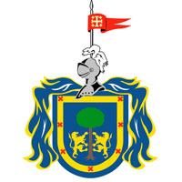

En la región ha existido presencia humana desde hace 15,000 años aproximadamente según lo indican restos humanos, entre ellos fragmentos de cráneos, y diversidad de vestigios de animales, junto con otros testimonios de objetos manufacturados, descubiertos alrededor de las lagunas de Zacoalco y Chapala, que entonces estaban unidas entre sí. Se han podido localizar puntas de flecha, raspadores de cuerno de venado, agujas, punzones, silbatos, anzuelos y colgantes de hueso o colmillos, percutores de hueso de caballo, e incluso una vértebra de ballena con dos golpes producidos por el filo de un instrumento tosco, que fue localizada a fines del siglo XIX en Zacoalco de Torres. En 618 d. C. se funda el Reino de Jalisco por los toltecas. Su origen y desarrollo se ubica en el horizonte clásico y en el posclásico. Por lo que se conoce actualmente, el señorío de Jalisco fue uno de los más importantes en la región, con relaciones comerciales que se extendieron hacia los pueblos del centro de Mesoamérica con los que realizaban intercambios de productos agrícolas, así como de artículos necesarios en la vida diaria y de ornato. El señorío de Jalisco comprendió poblaciones localizadas en el occidente hacia la Bahía de Banderas. En esta región se han localizado importantes restos arqueológicos que demuestran el nivel alcanzado. Entre sus poblaciones principales estaban Tepique, Atemba, Pochotitán, Tecuitazco, Xalcocotán, Zacualpán, Xaltemba, Mazatán. El centro de este señorío se localizaba en las faldas del cerro del Coatepec, elevación que alcanza los 1.560 metros de altitud sobre el nivel mar y que domina todo el valle de Matatipac, en el actual municipio de Xalisco. Aún, con ello, también existieron más señoríos en tierras jaliscienses a las que se suman los sayultecas, los tecuexes que tenían habitados las zonas de Xallostotitlán, Tzapotlán, Tecpatitlán, Tecomatlán, Ayahualicán, Teocaltitlán, Mexticacán, Acatic y Tonallan que estaban en constantes enfrentamientos con sus vecinos como el señorío de Teocaltiche, poblados por huachichiles y caxcanes. Mientras tanto, también destacaron los señoríos de Colima y Autlán en el sur del estado; así como la Tradición Teuchitlán en tierras de Ameca, Tequila, Etzatlán y Teuchitlán donde se ubican las pirámides circulares de Guachimontones. Y en el centro del estado en las tierras de Guadalajara y Tonalá existieron los Cocas, una tribu muy relacionada con los tecuexes tepatitlenses y que a medida de que se realizaron cambios comerciales con estos pobladores, surge el gentilicio de "tapatío" para los habitantes de Guadalajara, que ese nombre era dado al trueque que los habitantes precolombinos de Tepatitlán daban a los cocas. Todas estas tribus menores pero igualmente resaltantes, fueron influenciadas por toltecas, chichimecas, estilo mezcala, estilo chupicuaro, estilo Nayarit y Estilo Tumbas de Tiro.Jalisco, el séptimo estado en extensión y el cuarto más productivo de la república mexicana (después de Ciudad de México, Estado de México y Nuevo León), ha experimentado un importante crecimiento en su actividad económica y comercial durante los últimos años. Entre los principales productos que forman parte de la comercialización del estado destacan los cosméticos, aparatos electrónicos, tecnología, farmacéuticos, construcción, textiles, tabaco, alimentos y bebidas, artículos deportivos, etc. Así mismo, el sector de servicios también ha crecido con intensa pujanza, al igual que el sector turístico y el financiero. La cocina jalisciense ha contribuido ampliamente a dar fama internacional a la gastronomía mexicana. Los platillos jaliscienses tienen una relación directa con los productos locales como el maíz, el fríjol, la calabaza, el trigo, el agave y los árboles frutales. Algunos de los platillos más representativos son: la birria, el pozole blanco o rojo, los sopes, el guacamole, frijoles charros, el menudo, las tortas ahogadas, la carne en su jugo, las enchiladas rojas y verdes, los tamales de elote, el borrego al pastor y los tamales de frijol entre mucha más variedad. Uno de los platillos que se han incorporado en las últimas décadas son los tacos al pastor, sobre todo en el municipio de Atotonilco el Alto, aunque el municipio de Arandas es también reconocido por sus tacos. Entre sus dulces sobresalen el alfajor, palanquetas de cacahuate o pepitas de calabaza, cocadas, dulces en conserva, dulces de leche, la jericalla, perones enmielados rojos, algodones, buñuelos, camote y calabaza enmielada. Mientras que en sus bebidas el tequila, aguamiel, pulque, tejuino y aguas frescas de horchata y de frutas naturales, marcan la distinción. La cocina jalisciense es un espacio en el que se unen, por un lado la elaboración de platillos, en los que se distinguen los guisados, salsas, aún las más picantes, dulces y bebidas que se destacan por su apariencia y exquisito sabor, por otro lado los utensilios y productos necesarios para su preparación.
